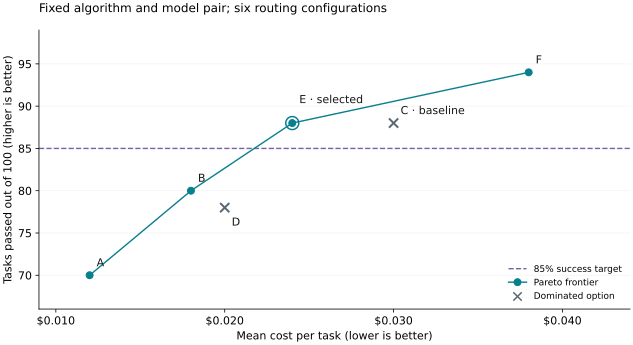

Tuning Examples¶
These two comparisons show how to choose routing settings or a model pair for a fixed objective. Start with Tuning Foundations to define that objective and design candidates. All numbers are illustrative, not measured benchmark results. The final section outlines planned GEPA support.
Tune configuration options for cost¶
Suppose the goal is to minimize mean cost per task while passing at least 85% of tasks. Keep the routing algorithm and model pair fixed, then compare its configuration options.
Choose the stage-router controls to tune¶
This example focuses on the stage router. The same process applies to other routing algorithms: choose controls that affect your objective, compare candidates, and validate the selected configuration.
Stage router has many fields. With the model pair fixed, start with the controls
that most directly change the routing split and cost: profile, threshold, and
hold turns. The profile is selected by the picker field:
Profile (picker) |
Default behavior | When it may fit better |
|---|---|---|
efficient_first |
Use efficient on ambiguous turns; escalate when signals call for capable. | The efficient model handles most work, and occasional escalation can recover difficult tasks. A useful starting point for reducing cost. |
capable_first |
Use capable on ambiguous turns; offload when signals support efficient. | Ambiguous or difficult work needs the capable model, with clear routine stretches to offload. Experimental: calibrate on your workload before relying on it. |
The threshold changes which signals trigger a switch, and therefore the share of requests each tier serves. Its direction depends on the profile:
| Control | Profile | Lower value | Higher value |
|---|---|---|---|
confidence_threshold |
efficient_first |
Easier escalation; more capable traffic, tending toward higher model cost. | Harder escalation; more efficient traffic, tending toward lower model cost. |
confidence_threshold |
capable_first |
Easier offloading; more efficient traffic, tending toward lower model cost. | Harder offloading; more capable traffic, tending toward higher model cost. |
capable_hold_turns |
Both | Fewer forced capable requests; routing can return to efficient sooner. | More requests stay capable after switching, allowing longer recovery at greater capable usage. |
efficient_hold_turns |
Both | Fewer forced efficient requests; routing can escalate sooner. | More requests stay efficient after switching, which can save cost but delay escalation even when errors appear. |
These threshold effects describe signal-based routing without a classifier;
active holds and hard overrides take precedence. For holds, 0 disables the
hold; positive values count requests, while -1 pins the tier after a switch.
Longer holds can reduce switching and preserve cached context, so measure total
cost, retries, and task success together. See the
stage-router guide for
profile and threshold details.
Handoff notes can break cache reuse across turns. They are added only to the forwarded
request, so later requests can omit the note and break reuse of the cached
continuation. A fix is planned for a future release. Leave handoff_notes
unconfigured for this cost comparison; see
handoff notes.
Split the benchmark and collect baselines¶
Use 20% for calibration and 80% for held-out validation, chosen before tuning. For this example's 500-task benchmark, tune on 100 tasks and reserve 400 for the frozen configuration. Keep related tasks together and both splits representative; see split guidance.
First run efficient-only, capable-only, and the current routed configuration on the same 100 calibration tasks. These illustrative baselines show what routing must improve on:
| Baseline | Tasks passed | Mean cost per task |
|---|---|---|
| Efficient-only | 64/100 | $0.010 |
| Capable-only | 94/100 | $0.040 |
| Current routing (C below) | 88/100 | $0.030 |
Use the same agent, task limits, serving settings, and initial cache setup for every run. Include all billed calls, retries, and cache charges.
Compare six configurations¶
For this experiment, choose the efficient-first profile and vary only the threshold and capable hold. This isolates their effect before trying another profile.
Use stage_router with picker = "efficient_first", no classifier,
recent_turn_window = 5, and efficient_hold_turns = 0. Keep the model pair,
serving settings, agent, task limits, initial cache setup, and all other options
fixed. Compare all six candidates on the same 100 calibration tasks.
Run each candidate end to end: changed routing can alter later prompts, cache state, and costs, so reusing one run's outcomes can misrank them.
Here are results from one run per calibration task, with C as the baseline. Compare mean cost among candidates meeting the 85% target. Include failed tasks, retries, and cache charges in that cost.
| Candidate | Threshold | Hold (requests) | Tasks passed | Mean cost per task |
|---|---|---|---|---|
| A | 0.7 | 0 | 70/100 | $0.012 |
| B | 0.5 | 0 | 80/100 | $0.018 |
| C (baseline) | 0.3 | 0 | 88/100 | $0.030 |
| D | 0.7 | 2 | 78/100 | $0.020 |
| E | 0.5 | 2 | 88/100 | $0.024 |
| F | 0.3 | 2 | 94/100 | $0.038 |
E improves on C: it passes the same number of tasks and costs less. B improves on D in both cost and task success. Remove C and D from consideration.
A, B, E, and F form the Pareto frontier among these six routed candidates. No other candidate in this sweep matches or improves both measures while improving at least one. These options offer the remaining cost/success tradeoffs:

Figure 1. The circles form the observed Pareto frontier. Crosses mark candidates that another option improves on. The dashed line is the 85% task-success target.
Select E under this objective. A and B miss the success target. E and F both meet it, but E costs less: $0.024 per task, or $2.40 across 100 tasks. E reduces cost by 20% from baseline C while preserving its observed 88% success rate. It also costs 40% less than capable-only, with six fewer tasks passed, while still meeting the 85% target. F buys a higher success rate at a higher cost.
The frontier describes the calibration sample. Repeat promising runs, then freeze the selection. Run E and all three baselines on the untouched 400-task validation split to check whether the cost advantage and success target hold.
Check the efficient model when overrides dominate¶
This example keeps the objective and the route from the cost comparison. The
capable model has most of the calls in .models, and the first instinct is to
raise confidence_threshold. Read routing_decisions in /v1/stats first,
after a reset and a run of the calibration tasks, as in
Before you start.
When override is a large share of the counts, the threshold is the wrong
control. Each override means a repeated failure, a critical error, or a
context-compaction marker in the recent tool results forced the capable tier.
These decisions skip the score, so confidence_threshold and the holds do not
change them. Raising the threshold moves only the dimensions decisions and
leaves the override share where it is.
The stage router override log line names the cause in override_reason:
repeated_failure, critical_error, or compaction. Count them. compaction
comes from a context-compaction marker in the history, so leave it out of this
comparison. Repeated failures and critical errors point at the efficient model:
- Measure the efficient model alone. Add the
passthroughroute from Check the efficient model before you route and run the same calibration tasks. Compare it with the capable-only baseline. When the efficient-only arm is far below the capable-only arm, routing has to escalate a large share of turns to close the gap, and the savings shrink. - Run the compatibility checks on that page. Tool calling, structured output, context window, reasoning, and wire format. A model that passes a one-tool test can still produce malformed calls with the agent's full tool list.
- Change the efficient model. Compare pairs as in Model-pair selection. If no cheaper model clears the tasks, the capable share reflects the tasks, and the cost objective needs a new target.
After a change, reset the counters, rerun the calibration tasks, and read the
override share again before you compare cost. Then validate on the held-out
split as in final validation.
Model-pair selection with fixed algorithm settings¶
This independent example fixes the algorithm settings and changes the efficient/capable model pair. Score each task as execution cost plus $0.10 if it fails, then minimize the mean score. Choose that penalty before comparing results; it expresses how much failure matters for this example.
Use stage_router with picker = "efficient_first", confidence_threshold = 0.5,
recent_turn_window = 5, capable_hold_turns = 2, efficient_hold_turns = 0, and
no classifier or handoff notes. Keep this profile, all other settings, and the
evaluation conditions fixed while changing models. Check
model compatibility before running.
Use the same 20% calibration / 80% held-out validation split. To keep the arithmetic small, this separate example uses 30 tasks: six for calibration and 24 reserved for validation. Run each candidate end to end with the same agent, task limits, serving settings, and initial cache setup.
First measure each model alone on the six calibration tasks. These fictional single-model baselines use the same $0.10 failure penalty:
| Single-model baseline | Tasks passed | Total execution cost | Mean loss per task |
|---|---|---|---|
| E1 only | 3/6 | $0.048 | $0.0580 |
| E2 only | 4/6 | $0.072 | $0.0453 |
| C1 only | 6/6 | $0.240 | $0.0400 |
| C2 only | 6/6 | $0.300 | $0.0500 |
Now compare three routed pairs on those same tasks. Pair 1 is the current routed baseline. Pair 2 changes only the efficient model from Pair 1; Pair 3 changes only the capable model from Pair 2. Fixed routing settings can still produce different decisions because model outputs affect later routing signals.
| Pair | Efficient / capable | Tasks passed | Total execution cost | Failure penalty | Mean loss per task |
|---|---|---|---|---|---|
| 1 | E1 / C1 | 4/6 | $0.100 | $0.200 | $0.0500 |
| 2 | E2 / C1 | 6/6 | $0.140 | $0.000 | $0.0233 |
| 3 | E2 / C2 | 6/6 | $0.192 | $0.000 | $0.0320 |
Include every billed call, retry, and cache charge. For Pair 1, add $0.100 in execution costs and $0.200 for two failures, then divide by six tasks: $0.0500 per task. Failure penalties are part of the score, not billed charges.

Figure 2. Model-pair comparison under fixed algorithm settings.
Select Pair 2. Pair 1 has the lowest billed cost but loses its advantage when failures count. Pair 3 costs more without improving success on this sample. Pair 2 also passes all six tasks at lower cost than C1 alone, the best single-model baseline under this scoring rule.
Freeze Pair 2 and run it, the current Pair 1, and the single-model baselines on the untouched 24-task validation split. Compare mean loss and task success before making a deployment choice; follow the final validation guidance.
Upcoming: GEPA tuning for the unified router¶
GEPA-based prompt tuning for the unified router is planned for a future release, with tooling and concrete APIs to run the workflow. GEPA proposes instruction changes from feedback, evaluates them, and repeats while model weights stay fixed. See the GEPA paper for the approach.
The planned example will keep the model pool and objective fixed while changing the router's instructions:
- Use calibration-task outcomes to show where routing choices helped or hurt the objective. A reflector model uses that feedback to propose revised instructions.
- Compare proposed prompts within the calibration split using the same cost and success measures, including the cost of routing calls.
- Freeze the chosen prompt and evaluate it on the held-out validation split.
The API walkthrough and worked results will accompany the tooling release.